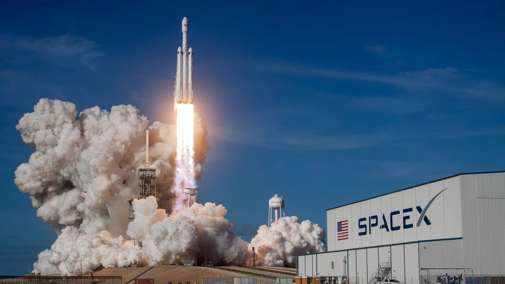
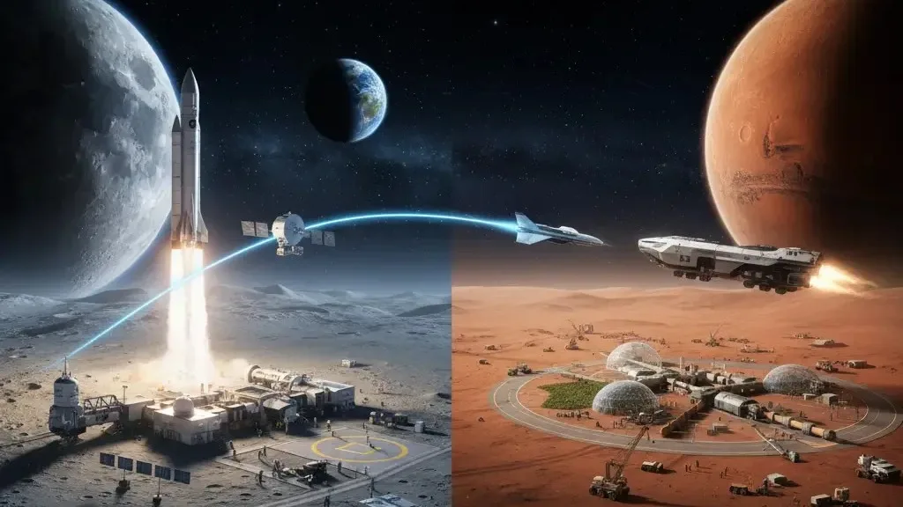
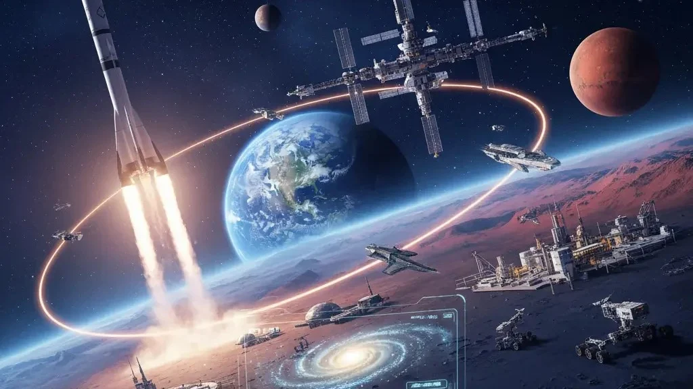
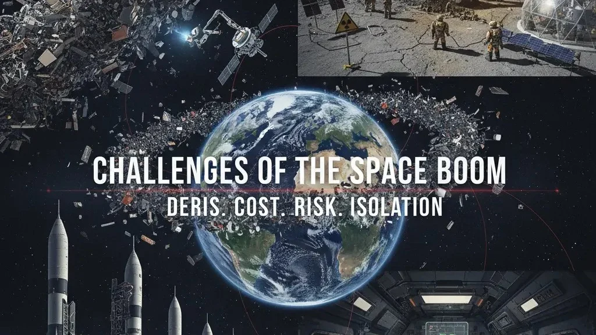
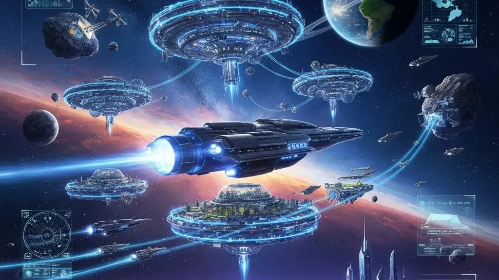

Space exploration in 2025 is no longer science fiction — it’s a booming industry that combines government missions, private companies, and international collaborations. From SpaceX’s Starship program to NASA’s Artemis mission to the Moon, and from ISRO’s affordable lunar exploration to China’s growing ambitions, humanity is entering a new space age..
🌌 The Rise of the New Space Race
The space industry has changed dramatically in just a decade. What once belonged only to NASA and Roscosmos is now shared with ambitious private players. SpaceX is leading the charge with its Starship program, designed for reusability and the dream of colonizing Mars. Blue Origin is focusing on long-term space habitats, while Rocket Lab is pioneering cost-efficient launches. Meanwhile, India’s ISRO has shown the world that meaningful lunar and Mars missions can be achieved at a fraction of the traditional cost. China, on the other hand, has rapidly built its own space station and is preparing for lunar exploration.
This mix of competition and collaboration has made rocket launches cheaper, satellites more accessible, and interplanetary dreams far more realistic than ever before.
🌙 Moon Missions and the Road to Mars
The Moon is humanity’s next big testing ground. NASA’s Artemis program aims to return astronauts to the lunar surface and eventually build a permanent base. Such a base would act as a gateway for deeper missions, including those to Mars. SpaceX’s Starship is being developed with the explicit goal of carrying both humans and cargo to the Red Planet, turning what was once a sci-fi fantasy into a practical engineering challenge.
Beyond the Moon and Mars, conversations are already shifting toward asteroid mining, space-based solar power, and deep-space telescopes that could peer farther into the universe than ever before.
🌍 Why Space Exploration Matters to Everyone
The benefits of the space exploration boom reach far beyond astronauts and scientists. Space-based technologies have already transformed life on Earth. Satellite internet constellations like Starlink are connecting remote regions that were once left offline. Climate-monitoring satellites are helping us understand global warming by tracking deforestation, melting ice caps, and carbon emissions in real time. Many everyday technologies — from GPS navigation to advanced medical imaging — trace their roots back to space research.
Economically, the space sector is projected to explode into a trillion-dollar industry within the coming decades, creating jobs, new markets, and opportunities we can barely imagine today.
⚠️ Challenges of the Space Boom
As exciting as the space exploration boom is, it comes with a set of challenges that humanity cannot afford to ignore. One of the most pressing concerns is space debris. With thousands of satellites already in orbit and hundreds more being launched every year, Earth’s orbit is becoming increasingly cluttered. Even small fragments of debris travel at such high speeds that they can destroy spacecraft or satellites on impact. If left unchecked, this could trigger a cascade effect known as the Kessler Syndrome, where collisions generate more and more debris, eventually making certain orbits unusable.
Another major hurdle is the astronomical cost of deep-space missions. While reusable rockets have dramatically reduced launch expenses, projects like building lunar bases, sending humans to Mars, or developing asteroid mining still require billions in funding. This raises tough questions about priorities: should humanity pour massive resources into space while poverty, climate change, and inequality remain unsolved on Earth?🌟 The Future of Space Exploration
We are living in a golden era of discovery. This isn’t just a repeat of the Cold War’s space race; it’s a collective effort by nations, corporations, and visionaries to redefine humanity’s place in the universe. By the mid-21st century, it is entirely possible that humans will not only visit but also live on the Moon and Mars.
The truth is clear: humanity’s next giant leap is not a question of if but when. What remains uncertain is whether we will take this opportunity to expand wisely — learning from our past mistakes, prioritizing sustainability, and exploring with respect for both nature and the unknown.
The space exploration boom is about more than rockets and astronauts. It’s about securing humanity’s future, unlocking endless opportunities, and inspiring generations to dream bigger than ever before. For the first time in history, we aren’t just looking at the stars — we’re preparing to be among them.